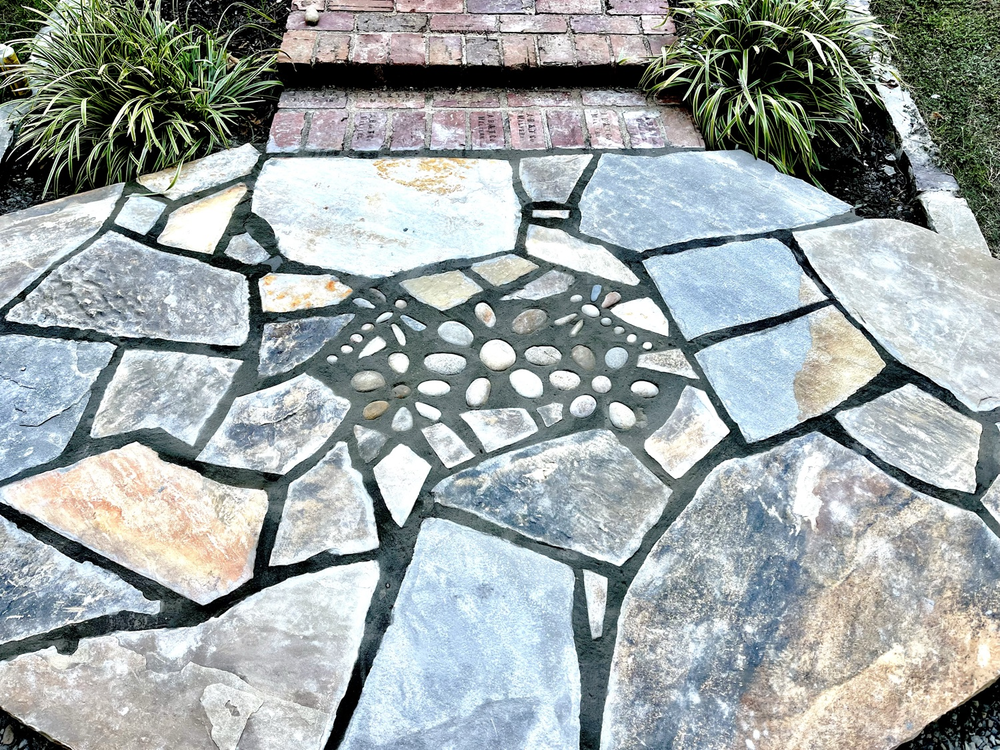
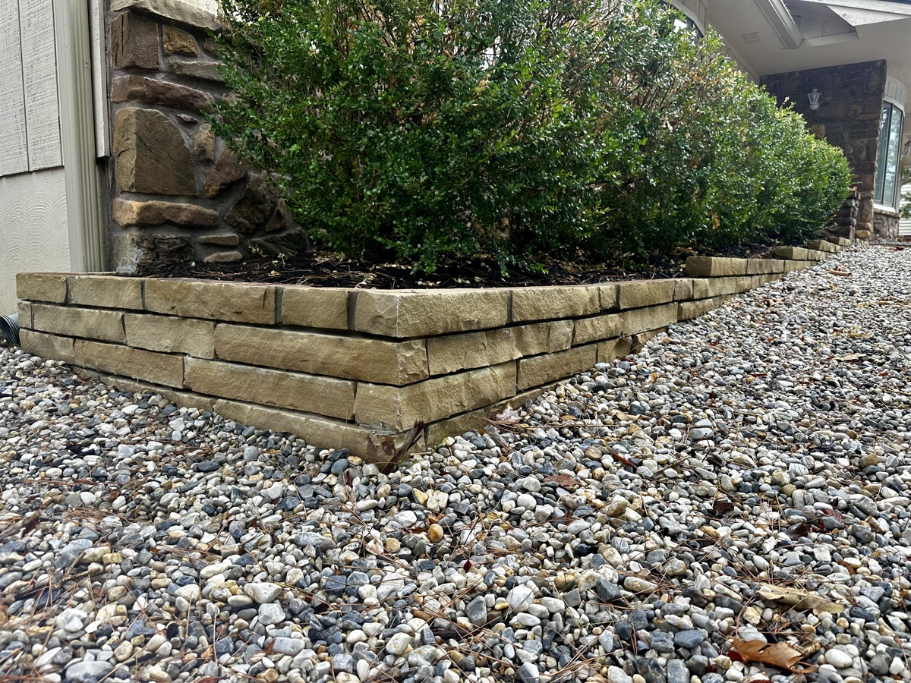
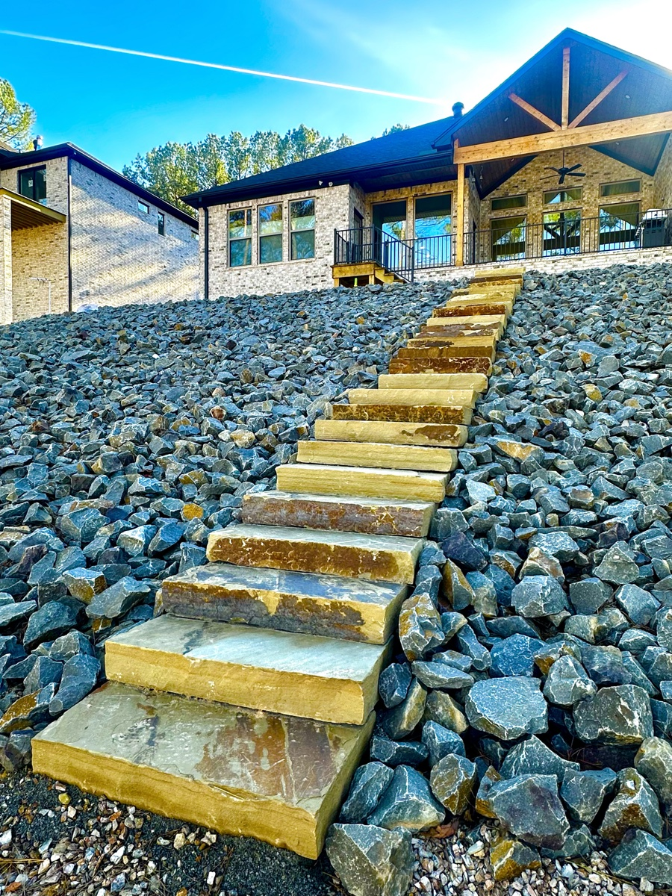
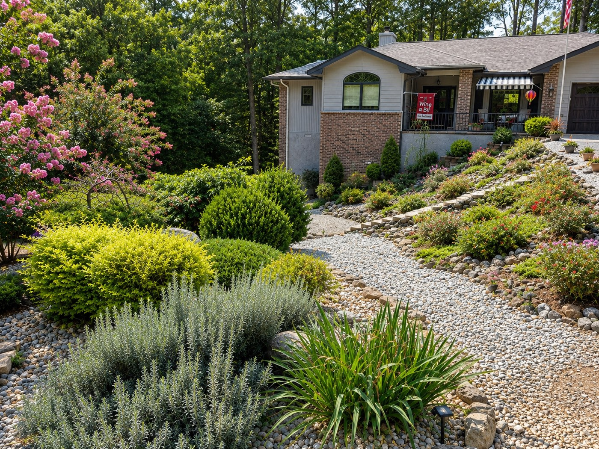

Retaining Walls · Hot Springs Village, Arkansas
Hillside lots are why people love the Village, and why so many yards wash out. A stone wall holds the slope, gives you level ground to use, and can be the best-looking thing in the yard.
★★★★★ 5.0 from 17 Google reviews · Family-owned · Landscaping since 1998
A wall has to deal with water first. We plan where runoff goes, build on a proper base, and use natural stone and boulders so the wall looks like part of the hillside.
If your slope is eroding, the wall is half the answer. The other half is giving the water somewhere to go. We often pair a wall with a dry-creek bed or drain so the fix lasts.
Our own work




"I live in Arizona and have a 98 year old mom who lives in Hot Springs Village... I called Derrick and he responded quickly and came up with a solution to her problem quickly, professionally and with a good price. His crew came out and whipped her yard into shape, contacted the HOA and brought the house into compliance."
Common questions
Yes. We build natural-stone retaining walls, seat walls and terraces on sloped lots in Hot Springs Village and Hot Springs.
Usually both. We look at where the water comes from and where it should go, then build the wall and the drainage together.
Many exterior projects in the Village need a permit from the POA before work starts. Ask the POA's permitting office what your project needs. We can give you the drawing, materials and measurements they ask for.
Call or text, Monday to Friday 8am to 3pm. After hours, leave a message and Derrick calls you back.
More: Hot Springs Village · Fire Pits · Stone Patios · Landscape Design · Mountain Pine · Home